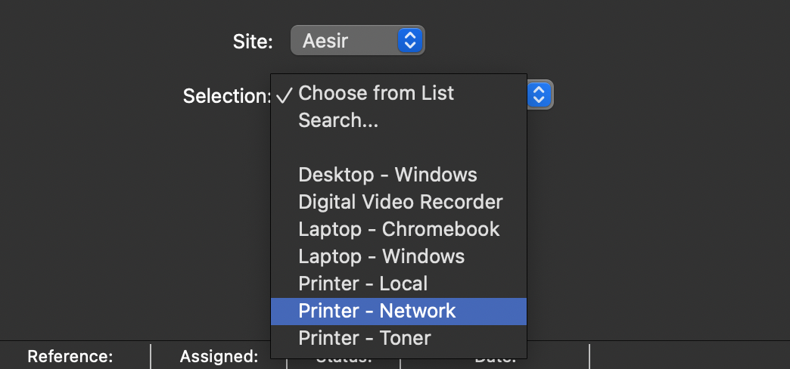
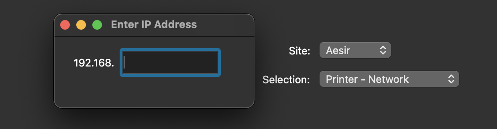
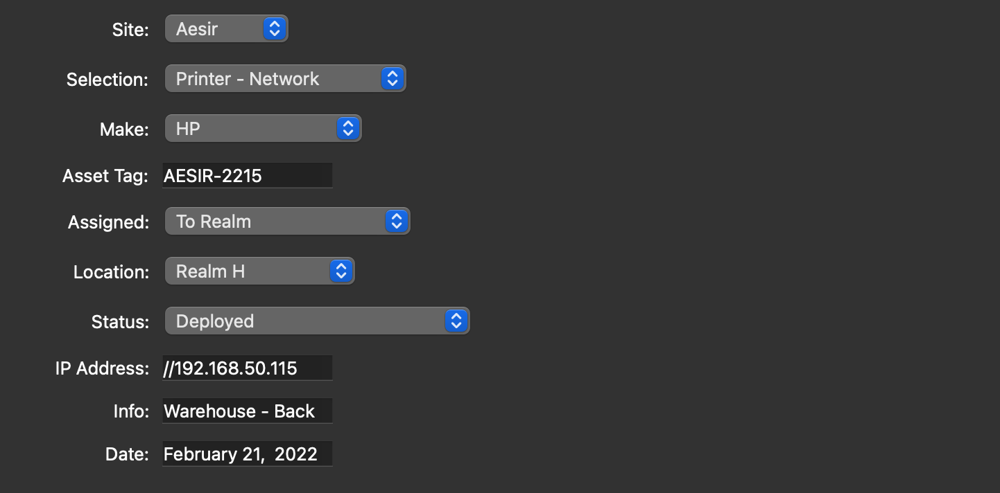
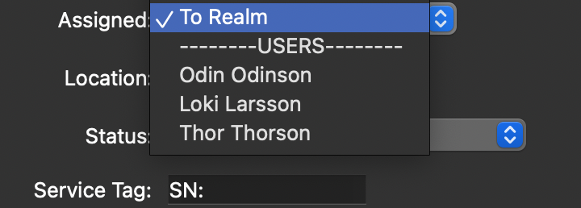
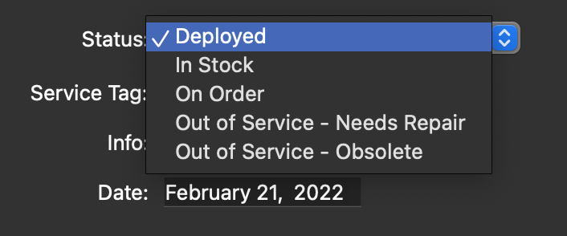

ODIN is an asset management system intended [primarily] for I.T. teams of small to medium businesses that need a versitile and modular inventory system to manage their equipment, but may not have the resources necessary to adopt and pay for expensive alternatives. ODIN was built with modularity in mind, making it easy to change every part of the experience to fit your organization's needs.
Built in Python 3, ODIN uses Qt and SQLite to deliver a fully customizable GUI and saves all of its data into a SQL Database. This grants adminstrators the ability to sync their databases across a network and access (and ammend) various database entries with ease. Future versions of ODIN will include nodes that have network features built in — but for now, the data is saved locally and will have to be synced manually.
ODIN is made up of different components — Týr, Mimir, Heimdall and Forseti. Each component serves a different purpose, but together form the entire application. These components are not different programs; they are different aspects of the program and shall be referred to independantly in the interest of ODIN's modular focus.
Týr is the front-end of the application – the GUI users will interact with, and is built in PyQt6. It's also responsible for taking data and saving it in various formats, most notably SQL databases and spreadsheet exports. All functions call to Týr; whenever you're using the application, you are interacting with Týr.
Here's what Týr looks like:

Mimir is the built-in console that's designed to help users perform various tasks and increase productivity, and also acts as the mediator for applications accessing stored database entries. Currently, Týr is the only application using Mimir, but it will eventually run independantly as a CLI and will be able to perform various tasks, such as parsing through spreadsheets for entries, ammending them, merging databases and a lot more. For now, however, Mimir is built into both Týr and Heimdall.
The release of a standalone Mimir console is TBD at this time.
Heimdall, like Týr, is a GUI — but whereas Týr is used by administrators to manage Mimir's databases, Heimdall is intended for end–users to acess and view designated entries from Mimir's database using a routing module known as the Bifröst. Heimdall allows clients to see parts of Mimir's database that they have been given access to, such as assets and equipment that's been assigned to them and their department, without giving them write abilities or full access to Týr's admin toolset. Heimdall will be using the Django framework and is a seperate web–application that can be accessed through a browser.
Heimdall is currently in development with no announced release date.
Forseti is a GUI-toolkit for Týr. Forseti allows you to customize Týr's data fields and buttons to fit your organization's needs. Maybe your organization doesn't use 'Asset Tags', maybe you prefer 'Part Number' instead. Or perhaps you want to add more entries to the GUI and change some existing ones. Using Forseti, you can make these changes and build a Týr that fits your needs without having to dabble in code.
There's also an option to reset Týr's values back to their default settings, in case you want to revert your changes.
Here's what Forseti looks like:

When an admin runs ODIN, the system verifies your credentials and a request is sent to Týr, the admin front-end module. Týr then communicates with Mimir, the system responsible for database entries and amemmendments. These two work together, Týr acting as the console interface and Mimir managing the back-end database.
When client users run ODIN, or admins accessing the system outside of their network, the requests need to first pass through Heimdall to grant database access. Heimdall acts as a gatekeeper, only granting users access to parts of Mimir's database. The various credentials are setup within a configuration called the Bifröst, which Heimdall uses to authenticate access. Heimdall, unlike Týr, does not have any admninistrating properties and is only used to view data. However, Heimdall will allow users to send requests to administrators in the form of notations, called Ravens, which admins can use to fulfill client side requests.
Together, these modules allow administrators to create and manage multiple databases using an intuative and fully modular GUI, and designate access to appropriate end–users with a seperate client–side GUI. This is a great way to manage assets, equipment, licenses, technical knowledge, and lots more — and it is 100% free and open sourced.

Database Selector— A drop–down menu that let's you choose a database to access [upper–left corner of the GUI]
You can create as many databases as you want. These all get stored within Mimir
|----This feature is currently not available
Site— Jobsite / District / Region
Site selection will determine the list of locations available to assign equipment to. This allows for unique location names to populate a following menu based on the initial site selected.
Selection— Asset Category
Selecting an asset category initiates Týr's admin tools.
Based on your selection, Týr will ask a follow–up question to gather information about your asset. For example, if you select a network device, Týr will ask for the device's IP Address. If you select a mobile device, such as a laptop or tablet, then Týr will ask for the device's Serial Number. Devices that can be used over a network, but are being used purely as local devices, like a Local Printer, will prompt the user to designate a purpose, or use case, for the device instead of an IP Address.
Upon loading the toolset, several options are available to you. The information you specified in the follow–up question gets added to the Reference tab automatically with the proper syntax.
Make— Manufacturer of Asset
Based on your asset selection, a list of makes of that said asset will automatically populate the Make drowdown menu. A list of makes can be altered to fit your needs.
Asset Tag— Asset Tag of Asset
A unique asset tag number given to the device, often used by IT departments and businesses to keep track of equipment.
Assigned— Who / What the Asset is Assigned to
There's two options here; you can assign an asset to a Location or you can assign it to a Person. Assets that are assigned to locations include shared printers, routers, switches, DVR's, computer carts, etc. Assets assigned to people include staff laptops, phones, tablets and other personal devices.
Location— Location of Asset
In what room / building / facility the device (or Person whom the device is assigned to) is located. The list of locations are tied to your site selection, so you can populate a different set of locations based on the chosen site.
Status— Status of the Asset
Designate whether the asset is Deployed, On Order, or if it's Obsolete. If it's a consumable asset, like toner cartridges for printers, this will automatically change to a Quantity type.
Reference Tag— A unique indentifier depending on the asset type
Reference tags change depending on the asset. For network devices, the Reference is their IP Address. For personal devices, the Reference is a Serial Number or Service Tag. In some cases, the Reference just defines the intended purpose of the device instead of a designated serial or address.
Info— Additional Information about Asset
Here you can add notes and more information about the device. It can also be used as a second–level indentifier. For example, if you have a lot of laptops, each with their own unique asset tag and reference tag, you can note in the Info section what cart or cabinet [or org–unit] they belong to as another way of keeping track of a set of assets rather than individual devices.
Date— Date of Asset's last change
Dates update manually whenever you add/change an entry. The most recent date will be shown exports
help— Lists available help options
help:readme— Read ODIN's documentation
help:shortcuts— Lists available keyboard shortcuts
help:tags— Lists available run arguments
at:{assettag}— Searches for an asset tag
TBD— Module not yet in production